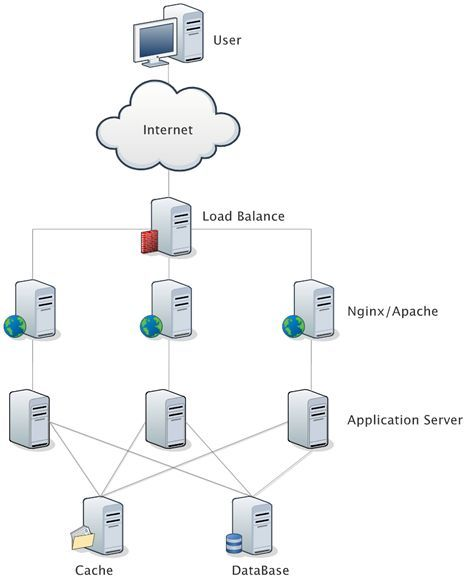
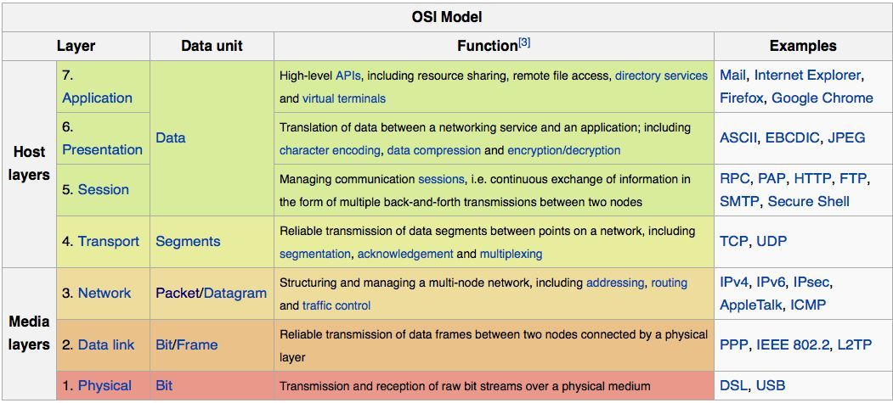
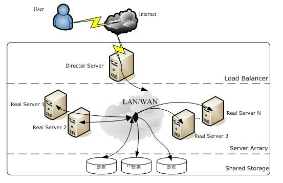
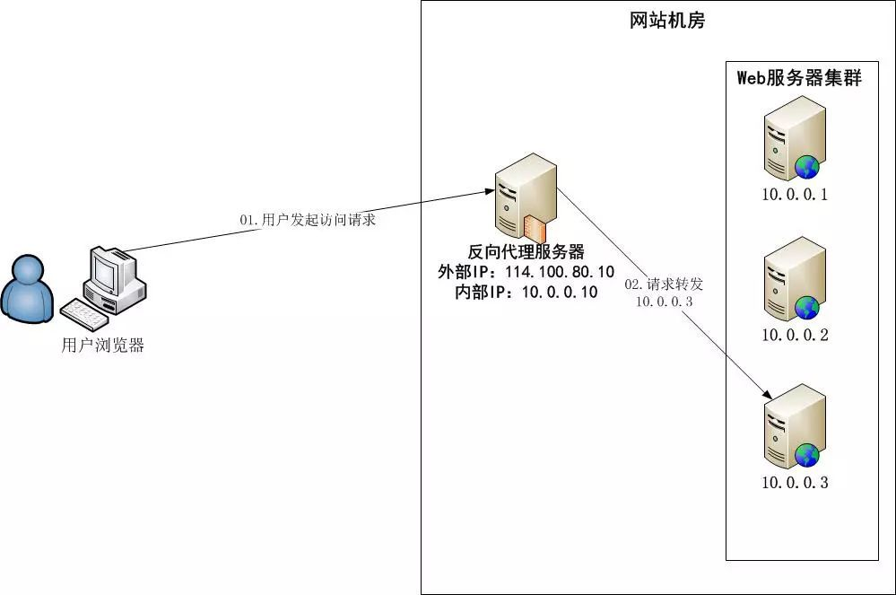

互联网(internet)，又称国际网络，始于1969年美国的阿帕网，指的是网络与网络之间所串连成的庞大网络，这些网络以一组通用的协议相连，形成逻辑上的单一巨大国际网络。
一、概念
当前大多数的互联网系统都使用了服务器集群技术，集群是将相同服务部署在多台服务器上构成一个集群整体对外提供服务，这些集群可以是Web应用服务器集群，也可以是数据库服务器集群，还可以是分布式缓存服务器集群等等。在实际应用中，在Web服务器集群之前总会有一台负载均衡服务器，负载均衡设备的任务就是作为Web服务器流量的入口，挑选最合适的一台Web服务器，将客户端的请求转发给它处理，实现客户端到真实服务端的透明转发。
LVS、Nginx、HAProxy 是目前使用最广泛的三种软件负载均衡软件。

二、对比

- LVS
LVS是Linux Virtual Server的简写，即Linux虚拟服务器，是一个虚拟的服务器集群系统。本项目在1998年5月由章文嵩博士成立，是中国国内最早出现的自由软件项目之一。现在LVS已经是Linux标准内核的一部分，从Linux2.4内核以后，已经完全内置了LVS的各个功能模块，无需给内核打任何补丁，可以直接使用LVS提供的各种功能。

一般来说，LVS集群采用三层结构，其主要组成部分为：
- ①负载调度器(load balancer)，它是整个集群对外面的前端机，负责将客户的请求发送到一组服务器上执行，而客户认为服务是来自一个IP地址(我们可称之为虚拟IP地址)上的。
- ②服务器池(server pool)，也称为服务器集群层(server array)，是一组真正执行客户请求的服务器，执行的服务有WEB、MAIL、FTP和DNS等。
- ③共享存储(shared storage)，它为服务器池提供一个共享的存储区，这样很容易使得服务器池拥有相同的内容，提供相同的服务。
LVS负载均衡机制
LVS不像HAProxy等七层软负载，七层负载面向的是HTTP包，可以做的URL解析等工作，LVS无法完成。LVS是四层负载均衡，也就是说建立在OSI模型的第四层——传输层之上，支持TCP/UDP的负载均衡。
- 四层负载均衡的实现机制主要是通过报文中的目标地址和端口。
- 七层负载均衡的实现机制主要通过报文中的真正有意义的应用层内容，因此也称为内容交换。
LVS的转发主要通过修改IP地址(NAT模式，分为源地址修改SNAT和目标地址修改DNAT)、修改目标MAC地址(DR模式)来实现。
- Nginx
Nginx(engine x)是一个高性能的HTTP和反向代理web服务器，同时也提供了IMAP/POP3/SMTP服务。它是一个强大的Web服务器软件，用于处理高并发的HTTP请求和作为反向代理服务器做负载均衡，具有高性能、轻量级、内存消耗少，强大的负载均衡能力等优势。

Nginx大量使用多路复用和事件通知，Nginx启动以后会在系统中以daemon的方式在后台运行，其中包括一个master 进程和n(n>=1)个worker进程，且所有的进程都是单线程(即只有一个主线程)的，进程间通信主要使用共享内存的方式。
master进程用于接收来自外界的信号，并给worker进程发送信号，同时监控worker进程的工作状态。worker进程则是外部请求真正的处理者，每个worker请求相互独立且平等的竞争来自客户端的请求。请求只能在一个worker进程中被处理，且一个worker进程只有一个主线程，所以同时只能处理一个请求。
Nginx负载均衡机制
Nginx是以反向代理的方式进行负载均衡的。
- 反向代理(Reverse Proxy)是指以代理服务器来接受Internet上的连接请求，然后将请求转发给内部网络上的服务器，并将从服务器上得到的结果返回给 Internet上请求连接的客户端，此时代理服务器对外就表现为一个服务器。
- HAProxy
HAProxy是一个使用C语言编写的自由及开放源代码软件，其提供高可用性、负载均衡，以及基于TCP和HTTP的应用程序代理。它特别适用于那些负载特大的web站点，这些站点通常又需要会话保持或七层处理。HAProxy运行在当前的硬件上，完全可以支持数以万计的并发连接，并且它的运行模式使得它可以很简单安全的整合进您当前的架构中，同时可以保护你的web服务器不被暴露到网络上。